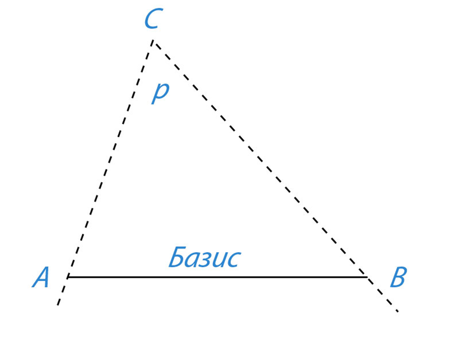

📝 Задания
Задание 1
Закончите предложения:
Для измерения расстояний в пределах Солнечной системы используют астрономическую единицу (а. е.), которая равна среднему расстоянию от Земли до Солнца.
1 а.е. = 149 600 000 км
Расстояние до объекта по времени прохождения радиолокационного сигнала можно определить по формуле _______, где S = 1/2·ct, где S — расстояние до объекта, c — скорость света, t — время прохождения светила.
Задание 2
Дайте определения понятиям «параллакс» и «базис»; на рисунке 10.1 покажите эти величины

Рисунок 10.1 - Схема измерения параллакса
Задание 3
Как с помощью понятий параллакса и базиса определить расстояние до удаленного недоступного объекта С (рис. 10.1)?
Задание 4
Угол, под которым со светила S виден радиус Земли, перпендикулярный лучу зрения, называется горизонтальным параллаксом p (рис, 10.2). Определите расстояния:
а) до Луны, если ее горизонтальный параллакс p = 57′
б) до Солнца, горизонтальный параллакс которого p = 8,8″
Задание 5
Сигнал, посланный радиолокатором к Венере, возвратился назад через t — 4 мин 36 с. На каком расстоянии в это время находилась Венера в своем нижнем соединении?
Задание 6
На какое расстояние к Земле подлетал астероид Икар, если его горизонтальный параллакс в это время был p = 18,0″?
Задание 7
С помощью наблюдений определили, что угловой радиус Марса p = 9,0″, а горизонтальный параллакс p = 16,9″. Определите линейный радиус Марса.